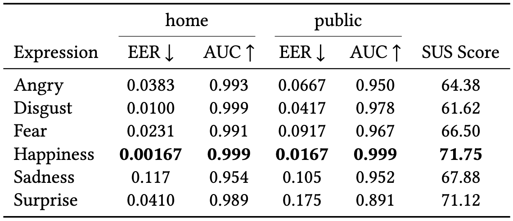

We evaluated recognition performance under two use cases:
a home scenario, in which the system is used by a small, closed group, and a public scenario, in which it is used by a larger and potentially unknown user population.
In the home scenario, all samples were treated as known users. 20 samples were divided into 5-fold for each user, with 16 samples used for training and 4 samples used for testing.
- Home scenario: all samples were treated as known users. 20 samples were divided into 5-fold for each user, with 16 samples used for training and 4 samples used for testing.
- Public Scenario: In the public scenario, samples from 20 participants were divided into 5-fold, with samples from 16 participants treated as known users and used for training and samples from 4 participants used for testing as unknown users.
In both scenarios, 5-fold cross-validation was applied. System performance was assessed using Equal Error Rate (EER) and Area Under the Curve (AUC).
The model achieved an EER of 0.00167 and an AUC of 0.999 when using the happiness in the home scenario,
demonstrating the highest performance among all facial expressions. In the public scenario,
the EER and AUC were 0.0167 and 0.999, respectively, also indicating strong performance.
Recognition performance when using sadness in the home scenario was an EER of 0.117 and an AUC of 0.954,
which was lower than that of the other expressions. However, in the public scenario,
it maintained performance comparable to that in the home scenario, achieving an EER of 0.105 and an AUC of 0.952.
For the other facial expressions, the AUC in the home scenario was almost 0.990, which was comparable
to the performance of the happiness. However, the AUC in the public scenario decreased to around 0.960,
recognition performance decreased to below that of the sadness expression.
Table: The performance evaluation and system usability scale (SUS) scores of the facial-expression-based authentication model for each expression
